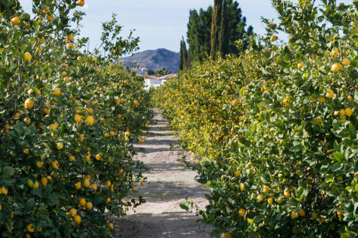

Lemon: The Citrus Powerhouse

Uses of Lemon
Lemons are a popular fruit with a variety of uses:
- Food and Beverages: Used in drinks, salads, desserts, and as a flavor enhancer in cooking.
- Medicinal: Known for its high vitamin C content, it supports immune health and digestion.
- Household Cleaning: Lemon juice is a natural cleaner and deodorizer.
Types of Lemon
Several varieties of lemons are cultivated around the world:
- Eureka Lemon: A popular variety with a tart flavor, commonly found in grocery stores.
- Lisbon Lemon: Similar to Eureka but more cold-tolerant, often used for commercial farming.
- Meyer Lemon: A sweeter, thin-skinned lemon often used in desserts.
- Villafranca Lemon: An Italian variety with a high juice content, popular for culinary uses.
Growth Requirements for Lemon
Lemons grow best under these conditions:
- Climate: Prefer warm, subtropical climates with temperatures between 25-35°C.
- Soil: Well-drained, sandy or loamy soil with a pH of 5.5-6.5.
- Water: Requires regular watering, especially during dry seasons.
Natural Fertilizers for Lemon
Organic fertilizers are beneficial for lemon trees, providing essential nutrients:
- Compost: Enriches soil with nutrients, improving soil structure and fertility.
- Bone Meal: High in phosphorus, supports root and fruit development.
- Fish Emulsion: Provides a balanced source of nitrogen for lush, green growth.
Pest and Disease Prevention
Common pests and diseases in lemon trees can be managed by:
- Aphids: Controlled using neem oil or insecticidal soaps.
- Citrus Canker: Prevent by pruning affected branches and avoiding overhead watering.
- Scale Insects: Managed with horticultural oils and regular monitoring.
Benefits of Lemon
- High in Vitamin C: Supports immune health and skin vitality.
- Antioxidant-Rich: Contains antioxidants that fight inflammation and free radicals.
- Digestive Aid: Lemon juice is known to aid digestion and detoxification.
Frequently Asked Questions
1. How long does it take for a lemon tree to bear fruit?
Lemon trees typically take 3-5 years to start producing fruit, depending on the variety.
2. Can lemon trees be grown in containers?
Yes, many lemon varieties grow well in containers, provided they receive adequate sunlight and watering.
Back to Crop List